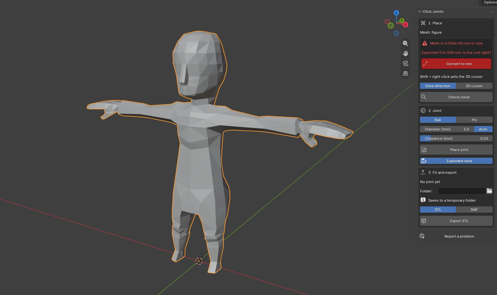
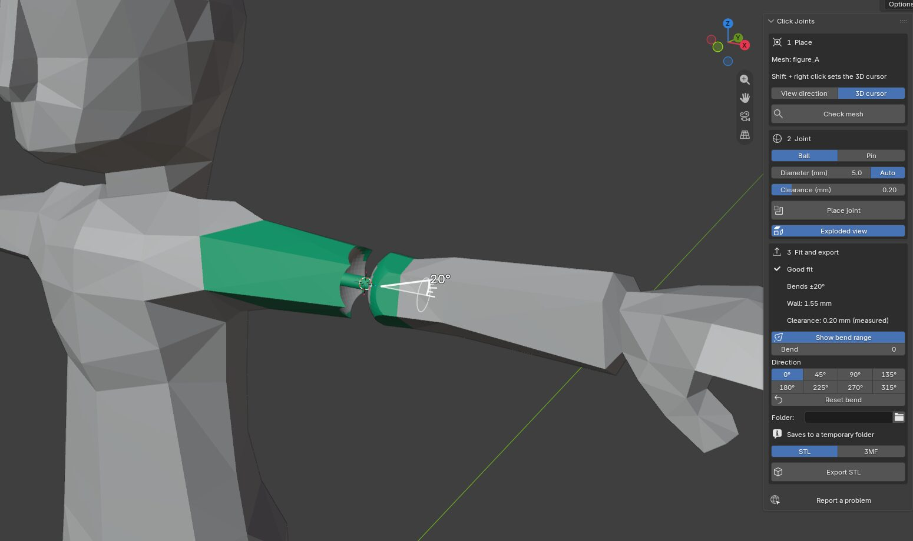

Guide · Blender for 3D printing
Make a downloaded STL figure poseable (even if you never opened Blender)
You printed figures from STL files that someone else made, and you want an arm or a head to move. You do not need to learn Blender for that. This page takes you from a fresh install to a 3MF file for your slicer, with one ball joint in the arm.
Blender in two minutes
- Get Blender. It is free: download it from blender.org. You need version 4.2 or newer.
- Install Click Joints. In Blender: Edit, Preferences, Get Extensions. The first time, click Allow Online Access. Then search joints and click Install. It is a free add-on made by us at Dortus.
- Make room. A new file starts with a grey cube. Click it and press X, then Delete.
- Import your STL. File, Import, STL (.stl), pick the file.
- Open the panel. Move the mouse over the 3D view and press N. A sidebar opens on the right; click the tab Click Joints.
Three mouse moves are enough for this guide: scroll to zoom, hold the middle mouse button to turn the view, and Shift + right click to put the 3D cursor (the small red and white ring) on the model.

One joint, step by step
- Check mesh. Click Check mesh. Downloaded STLs often have the wrong scale; click Convert to mm when the panel asks. If it says the mesh is not watertight, click Make watertight (it works on a copy).
- Set the 3D cursor on a thick spot. Shift + right click on the arm. On our figure the elbow itself was too thin (the panel said Too thin here for a ball joint), so we moved 12 mm up toward the shoulder.
- Point the joint along the arm. Under 1 Place, choose View direction and look straight down the arm, or 3D cursor if you rotated the cursor yourself.
- Place joint. Under 2 Joint choose Ball, leave Diameter on Auto and Clearance on 0.20 mm, and click Place joint. The figure is cut into two closed parts.
- Read the colour. Green is a good fit. Orange (Tight) means the wall is under 1.5 mm; red means too thin. Move the cursor to a thicker spot and try again with Ctrl + Z.

Export for your slicer
Under 3 Fit and export pick 3MF and click Export 3MF. Pick a folder first (for example your Desktop) with the small folder icon next to Folder, so you can find the files again. You get one file per part (on our figure figure_A.3mf and figure_B.3mf), in millimetres, so the slicer shows the right size.
In the slicer
- Print a test joint first. Every printer is different. Our free fit test strip prints five joints from 0.10 to 0.30 mm clearance. Print them flat end down, no supports, and use the clearance that turns smoothly without wobble.
- Put the socket opening up or on its side, so the slicer does not fill the hollow with supports.
We have not printed this figure yet. The numbers on this page are measured in Blender, not print tested by us.
Only use models you may change
Cutting a joint is a change to the model. Do it only with files whose license allows changes, such as CC0 or CC BY (credit the maker). Many models on print sites are “no derivatives” or personal use only; check the license on the download page. The figure on this page is CC0 (Quaternius, Ultimate Monsters).
A whole figure at once
The free add-on places one joint at a time. If your figure comes with a rig, Click Joints Pro places a joint at every shoulder, elbow, hip, knee and neck with one button, and adds a hinge with an end stop for knees and elbows. More guides: a ball joint in detail, a hinge with an end stop.